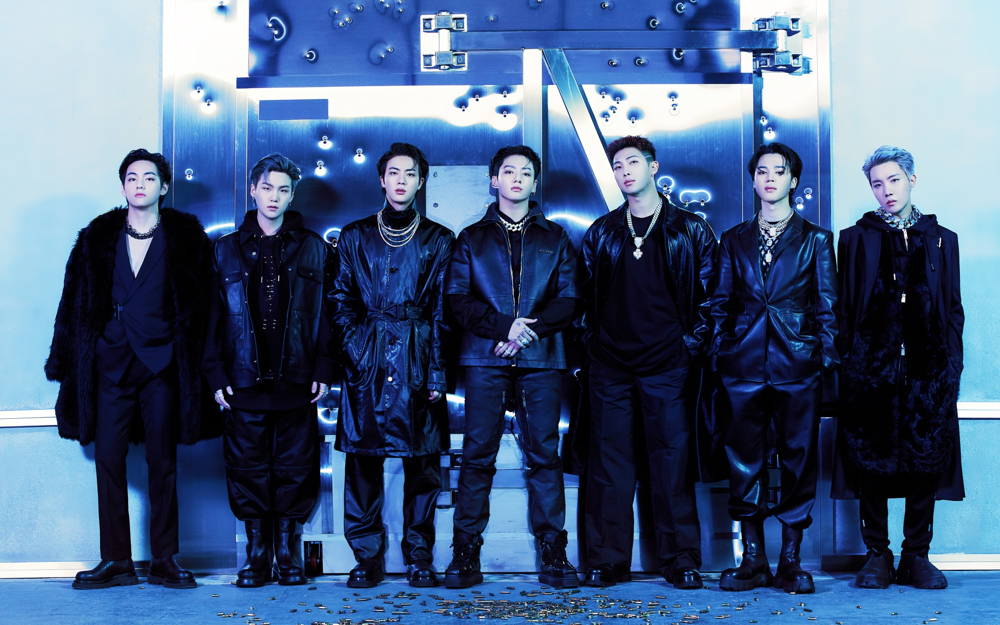
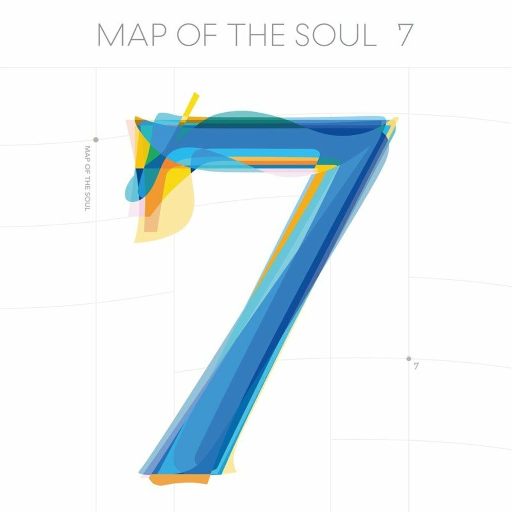

×

Explora la historia, integrantes, discografía y logros del grupo surcoreano que revolucionó la música mundial.
Explorar Ahora
BTS, también conocido como Bangtan Sonyeondan, debutó el 13 de junio de 2013 bajo BigHit Entertainment con la canción "No More Dream".
Inicialmente comenzaron como un grupo de hip-hop, pero con el tiempo evolucionaron hacia múltiples géneros musicales, incorporando pop, R&B, EDM y rock en sus producciones.
BTS se destacó por abordar en sus canciones temas como salud mental, autoestima, juventud, presión social y amor propio, conectando con millones de personas alrededor del mundo.
Gracias a su talento, esfuerzo y conexión con ARMY, se convirtieron en el primer grupo surcoreano en liderar Billboard Hot 100 y llenar estadios internacionales como Wembley y SoFi Stadium.

2020 - Reflexiona sobre identidad, ego y crecimiento personal.
2020 - Álbum creado durante la pandemia con mensajes de esperanza.
2018 - Trata el dolor y crecimiento en el amor.
2022 - Antología de su trayectoria musical.